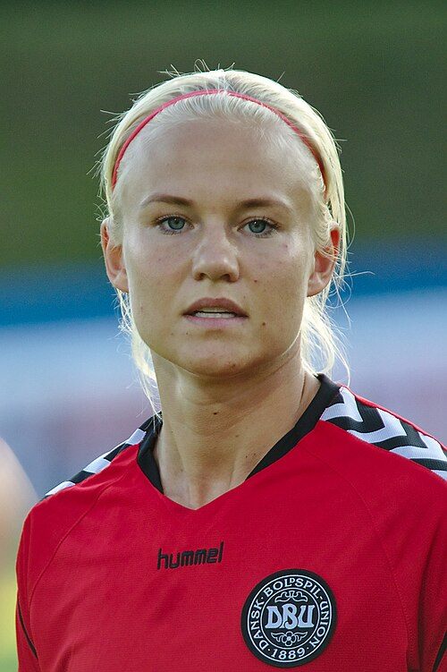

Ezzcoins › Player pages › Pernille Harder (Destined for Glory)

88
CAM

Harder
PAC83
SHO83
PAS82
DRI90
DEF29
PHY80
PlayStyles
✦Gamechanger✦Power Shot✦Precision Header✦Incisive Pass✦TechnicalDestined for Glory
Pernille Harder
88 CAM · FC Bayern München · GPFBL ·  Denmark
Denmark
No console price yet. New cards are priced every half hour while FUTBIN can be reached.
89Meta rating · CAM +1 vs overall · ST 89 · RM 87 · RW 87
PAC83
SHO83
PAS82
DRI90
DEF29
PHY80
Chemistry style
Turn on JavaScript to see this card with each chemistry style.
- Card
- Destined for Glory
- Added
- 25 Sep 2026
- Position
- CAM (also RM, RW, ST)
- Club
- FC Bayern München
- League
- GPFBL
- Nation
- Denmark
- Skill moves
- 4★
- Weak foot
- 4★
- PlayStyles+
- Gamechanger+
- PlayStyles
- Gamechanger, Power Shot, Precision Header, Incisive Pass, Technical
- Base card
- 87 CAM ›
Meta rating: Ezzcoins' own estimate of how well this card plays in game, worked out from its stats for each position it can play, its skill moves, weak foot and PlayStyle+. An average card scores about its overall rating; higher means it plays above its rating.
Watch on Ezzcoins